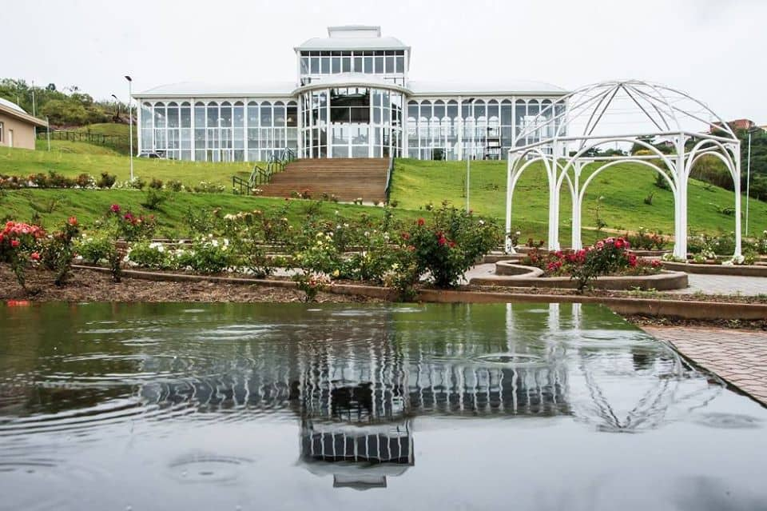
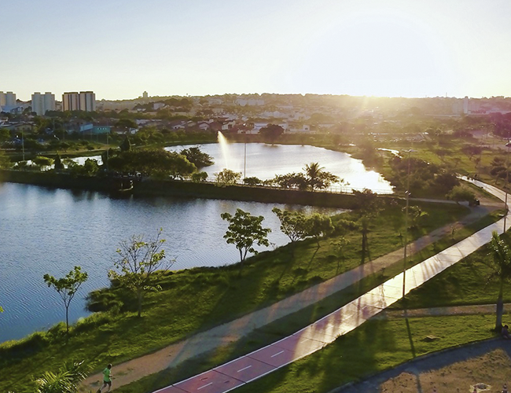
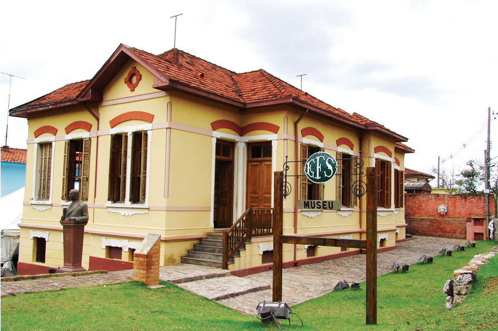
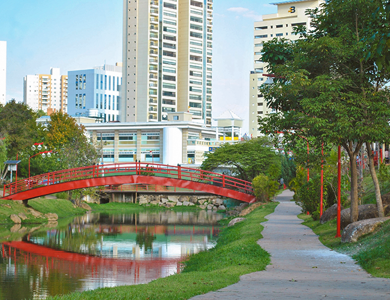
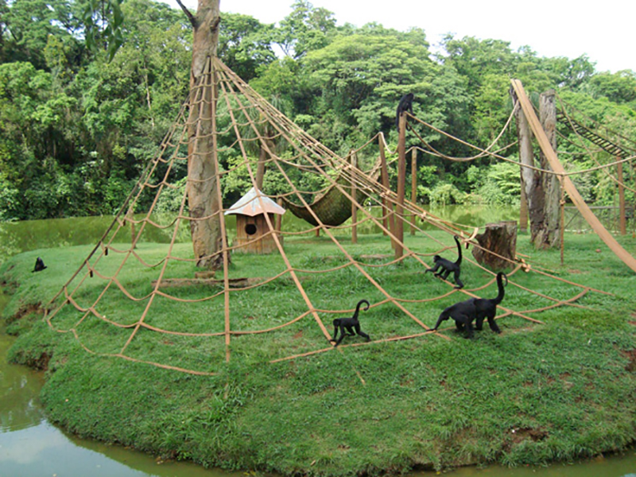

Descubra o que Sorocaba tem de melhor!
Jardim Botânico Irmãos Villas Boas

Com uma beleza ímpar, o Jardim Botânico Irmãos Villas Boas abriga um jardim sensorial com diversos tipos de plantas medicinais e um orquidário. O ponto forte do lugar é o palacete de cristal que tem em seu interior coleções de plantas, exposições e jardins com temas, como o Jardim Japonês e a Floresta Tropical. Para os amantes da natureza, com certeza é um passeio de encher os olhos!
Parque das Águas
Com mais de 160 mil metros quadrados, o Parque das Águas é um dos mais importantes complexos de lazer de Sorocaba. O lugar tem opções para todos os gostos. Se você estiver com crianças, pode aproveitar o circuito infantil ou o playground. Já para os amantes de esportes o parque oferece pista de skate, pista de caminhada, ciclovia, quadra poliesportiva e campos de futebol. Para quem quiser apenas relaxar, uma boa pedida é sentar nos bancos ou deque de madeira e apreciar a vista para o lado com fontes e a área com gramado.
Museu Estrada de Ferro Sorocabana
O Museu da Estrada de Ferro Sorocabana está localizado em uma antiga casa de engenheiro, do ano de 1910. São dois andares com exposição de móveis, equipamentos, projetos e maquetes da Estação Ferroviária e duas salas técnicas para arquivo de documentos em papel. O local foi inaugurado em 1997 pelo governo do Estado de São Paulo em parceria com a Fepasa e a Prefeitura Municipal de Sorocaba e, desde 2002, é administrado pela Prefeitura.
Parque Kasato Maru
Um pedacinho do Japão dentro de Sorocaba! Kasato Maru é uma homenagem ao centenário da imigração japonesa no Brasil e funciona desde 2008. Os projetos arquitetônico e paisagístico do parque são temáticos e contam com diversos elementos típicos da cultura e da religião do Japão. Por lá, você irá encontrar o Portal Torii, um globo terrestre metálico, um espelho d’água e a ponte Taiko Bash, além de deque de madeira e pista de caminhada com área verde ao redor de um lago.
Palácio dos Tropeiros

Localizado no Parque do Paço e próximo ao Teatro Municipal, a Biblioteca Municipal e a Câmara Municipal, o Palácio dos Tropeiros é a atual sede do Poder Executivo de Sorocaba. O prédio começou a ser construído em 1978 e foi inaugurado em 1981, e leva esse nome como forma de homenagem ao Tropeirismo, importante ciclo histórico. Em sua frente, há um belo lago com carpas, tilápias, marrecos, patos, gansos e cisnes, além de ipês, árvores da flora nativa do Cerrado.
Zoológico Quinzinho de Barros
Ocupando uma área de quase 130.000 m², o Zoológico Quinzinho de Barros destaca-se por oferecer recreação saudável e contato com a natureza, programas de educação ambiental, colaboração com pesquisas, gerando conhecimento sobre comportamento, reprodução e fisiologia. Mantém animais como: camelo, elefante, onça, leão, urso e conta com 70% dos animais da fauna nacional, com especial destaque para aqueles ameaçados de extinção.